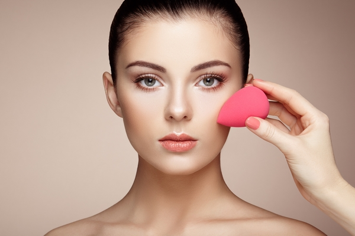

<!-- We don't need full layout here, because this page will be parsed with Ajax-->
<!-- Top Navbar-->

<div class="pages">
  <!-- Page, data-page contains page name-->
  <div data-page="about" class="page">
    <!-- Scrollable page content-->
    <div class="page-content">
      <div class="navbar">
  <div class="navbar-inner">
    <div class="left"><a href="#" class="back link"> <i class="icon icon-back"></i><span>العوده </span></a></div>
    <div class="center sliding">   </div>
    <div class="right">
       
      <!-- Right link contains only icon - additional "icon-only" class--><a href="#" class="link icon-only open-panel"> <i class="icon icon-bars"></i></a>
    </div>
  </div>
</div>
      <div class="content-block presentcon">
<div class="row">
  <div class="col-100">

  </div>
</div>

<div class="row t">
  <div class="col-100">
<h4>أخطاء المكياج التي تجعلك قبيحة </h4>
<h4>المبالغة في وضع أساس المكياج فاتحاً أو برونزاج</h4>
تحسين لون البشرة أمر ضروري، وكذا إخفاء العيوب، والتجاعيد وحب شباب شيء طبيعي، لكن الإكثار من وضع الكريمات المبيضة، أو ذات اللون البرونزي، قد تصنع طبقات في البشرة، تشوه شكل المكياج ويبدو وجهك سيدتي مصطنعاً دون شك وكآنكي تضعين قناع.وأيضاً استعمال كريم الاساس ونسيان الرقبة أمر يجعل مظهرك مشوهاً وأكبر من سنك
<li>وجوب الاعتناء بالبشرة قبل وضع المكياج عن طريق وضع ماسكات التفتيح الطبيعية مرتين في الأسبوع للحصول على. بشرة، نظيفة وفاتحة</li>
<li>كما يجب غسل الوجه جيداً ومسحه قبل وضع المكياج</li>
<li>اختيار الاساس فاتح من لون البشرة بدرجة واحدة فقط</li>
<h4>رسم الحاجبين باللون الداكن أو بعيد عن لون الشعر</h4>
وهذا ما يجعلك غير جميلة، لأنه يظهر شكل حاجبيك مصطنعاً وغير طبيعي، بسبب فرق لون الحاجبين والشعر.

اذن اختاري قلم أو بودرة الحاجب القريبة من لون الشعر والفاتحة بدرجة، دون الاكثار من وضعها، وتفادي رسم الحاجبين من بداية الحاجب مع تفادي رفع الحواجب بشكل مبالغ فيه لأنه سيعطيك سناً أكبر من سنك بكثير.
<h4>الإكثار من اللون الأبيض تحت العين</h4>
يجعلك أكبر سنا، وذات شكل غير مرغوب فيه كشكل تمثال محنط، فإضاءة العين أمر يضفي لمعان وبريق على الوجه لكن يجب أن تكون مجرد لمسات خفيفة، غير مبالغ فيها، وفي الزاوية الخارجية فقط
<h4>وضع الألوان الخطأ في ظل العيون</h4>
تفادي استعمال اللون الأسود للعيون الضيقة والصغيرة، مما يجعلها صغيرة جدا أكثر من حجمها. الطبيعي، فطريقة وضع ظل العيون يتطلب وقت وصبر واحترافية.

<h4>الاكثار من أحمر الخدود</h4>
ولاً يجب اختيار لون الخدود الملائم لبشرتك، دون الإكثار منه، فقد يجعلك بصورة مهرج عند. المبالغة في وضعه مع تجنب الإكثار منه ليلاً بفعل تواجد الأضواء التي تنعكس على الخدود وتجعل لونها واضحاً
<h4>الماسكارا والرموش المصطنعة</h4>
لإبراز عين ساحرة فانتي تحتاجين إلى رموش كثيفة، ولكن وضع الماسكارا بشكل كثير قد يتسبب لكي في تلاصق وتشابك الرموش، فيصبح على شكل عنكبوت، نفس الأمر ينطبق على الرموش المصطنعة لذا عند وضع الماسكارا يجب استخدام مكبس الرموش أولاً ، تم الاكتفاء بالقليل منها. أما عند شراء رموش مصطنعة ، اختاريها على شكل الرموش الطبيعية ، بشكل غير مبالغ فيه عند الرغبة في زيادة الماسكارا يجب الوقوف عند طبقتين
<h4>تكبير الشفاه باللون الأحمر</h4>
تكبير الشفاه باللون الأحمر لا ينطبق على جميع أشكال الوجه. لذا سيدتي اكتفي بحجم شفتيك الطبيعية مع وضع أحمر الشفاه، خفيف وغير غامق، وخصوصاً إذ كانت الأسنان غير بيضاء عند استعمال أحمر شفاه البراق يجب تفادي استعمال ظل العيون لظهور بمكياج ساحر
  </div>
</div>
   </div>
    </div>
  </div>
</div>